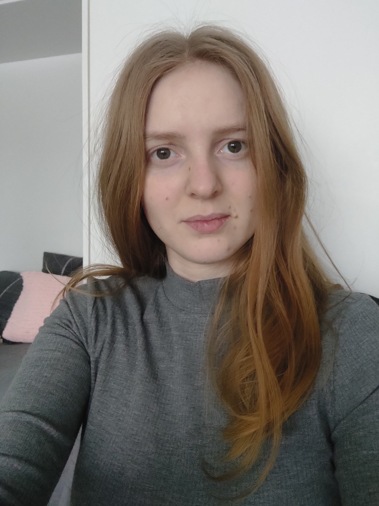

KUKA OLEN?

Olen 25-vuotias opiskelija kotoisin Kalajoelta. Muutin Jyväskylään 2019 opiskelujen
myötä. Opiskelen kolmatta vuotta tietojenkäsittelyä Jyväskylän Ammattikorkeakoulussa.
Valmistuin lukiosta vuonna 2016, minkä jälkeen pidin kolme välivuotta. Välivuosien
aikana kävin töissä ja mietin mille alalle haluan työllistyä tulevaisuudessa.
Valitsin Tredanomi, tietojenkäsittely linjan, koska minua kiinnosti teknolgia-ala
(erityisesti ohjelmistokehitys) vaikka minulla ei ollut ennestään syvempää osaamista
alasta.
Vapaa-aikani vietän lukemalla, pelaamalla ja elokuvilla. Nautin myös luonnosta ja
kesällä vaellan mielelläni lyhyitä luontopolkuja.
OPISKELUT
- RAUMANKARIN KOULU (2004-2013)
- KALAJOEN LUKIO (2013-2016)
- JYVÄSKYLÄN AMMATTIKORKEAKOULU (2019-)
TYÖHISTORIA
- SIIVOUS, PIIKA- JA RENKI PALVELU AY (5/2016-9/2016)
- POSTINLAJITTELU JA -JAKO, POSTI OY (2016-2019)
TEKNOLOGIAT
HTML/CSS
HTML ja CSS perusteet ovat tulleet tutuiksi opiskelujen aikana.

ANGULAR
Angulariin tutustuin ensimmäisen kerran web-kehitykseen suunnatulla opintojaksolla. Olen myös ollut mukana Allergiaskanneri projektissa, joka on kehitetty Angularilla.
AWS MACHINE LEARNING
Keväällä 2022 sain AWS Machine Learning-merkin suoritettuani tekoäly- ja koneoppiminen pilvialustalla-opintojakson. Opintojaksolla perehdyttiin tekoäly- ja koneoppimisen palveluihin pilvessä.
OSAAMINEN
Allergiaskanneri
Olin mukana Allergiaskanneri projektissa, joka toteutettiin Ticorporate Demo Lab- ja
Product Lab-opintojaksoilla.
Allergiaskanneri on PWA-sovellus, joka on rakennettu Angularissa. Sen tarkoituksena on helpottaa erityisruokavalioisten
ja allergikkojen kaupassakäyntiä. Sovelluksesta löytyy valmis lista ruoka-aineita ja
skanneri, jonka avulla luetaan tuotteen viivakoodi. Skannauksen
jälkeen sovellus ilmoittaa käyttäjälle sisältääkö skannattu tuote
mitään epäsopivia ruoka-aineita.
Toimin projektissa koodarina sekä tuotteenomistajana.